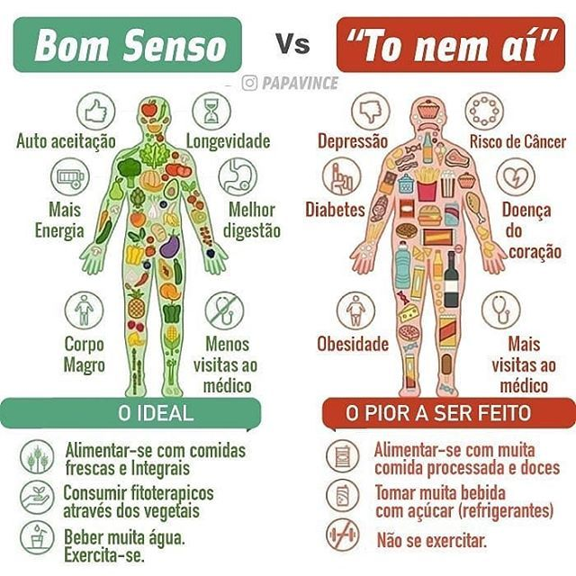

Muito além da redução de medidas e consequente melhora da autoestima, o emagrecimento saudável traz diversos outros benefícios. A lista é grande, e passa por exemplo pelo ganho de qualidade do sono, o alívio do estresse, pele e cabelos mais bonitos por conta da circulação sanguínea mais eficaz, redução do inchaço corporal, aumento da imunidade, entre outros aspectos.
Os indicadores laboratoriais também são positivamente alterados com a perda de peso saudável: colesterol, triglicerídeos e outros marcadores se reaproximam dos limites considerados normais, devolvendo a saúde. Além disso, o risco do surgimento de doenças cardiovasculares, problemas ortopédicos, varizes e diabetes, entre outras enfermidades, também é significativamente reduzido.

Como emagrecer de forma saudável e duradoura?
Promessas de perda muito rápida de peso com as dietas da moda. Restrições de diversos grupos alimentares nas refeições diárias. Jejuns prolongados. Fórmulas totalmente “milagrosas”. Suplementos emagrecedores que são vendidos como a grande última descoberta do mercado. Será mesmo que esses são meios eficazes para emagrecer através de uma dieta saudável?
Primeiro, é preciso entender o contexto em que tais soluções consideradas infalíveis aparecem com cada vez mais frequência. Mais da metade da população brasileira está acima do peso ideal, segundo o Ministério da Saúde. Aproximadamente 53% dos brasileiros apresentam excesso de peso e 45,8% não praticam atividades físicas suficientes. Estes e outros dados estão presentes no estudo Vigilância de Fatores de Risco e Proteção para Doenças Crônicas por Inquérito Telefônico (Vigitel Saúde Suplementar), em sua edição mais recente, de 2017.
Os números da pesquisa também mostram que o Brasil ainda está bastante distante da meta estabelecida pela Organização Mundial da Saúde (OMS), que pretende reduzir em 15% a inatividade física em todo o mundo até o ano de 2030.
Um lado, a população com sobrepeso e sedentarismo - por conta de diversos fatores, sobretudo aqueles comuns à vida moderna, como o estresse, a falta de tempo, as muitas horas gastas em frente a equipamentos eletrônicos como celulares, tablets e computadores. De outro, dietas e soluções que oferecem resultados inacreditáveis, mas que na verdade acabam muitas vezes piorando o quadro e desencadeando problemas como o efeito sanfona e a compulsão alimentar.
Diante deste cenário, é possível buscar um emagrecimento realmente efetivo para o corpo e benéfico para o organismo?
Como adotar uma dieta saudável?
O auxílio de profissionais especializados é muito importante desde o começo. O médico endocrinologista, por exemplo, realizará uma série de exames clínicos e físicos para avaliar se, além do sobrepeso - ou até mesmo da obesidade - há alguma outra doença associada. Com essas informações em mãos, é possível oferecer uma abordagem mais global, com o paciente sabendo das suas reais condições médicas.
O nutricionista tem papel fundamental nesse aspecto. Avaliando caso a caso, ele é quem indicará, de forma personalizada, o que cada indivíduo precisa ingerir para emagrecer de forma saudável e sem o risco de ganhar todo o peso perdido novamente. É também de suma importância no acompanhamento do paciente em sua nova rotina, aconselhando sobre como adotar os hábitos saudáveis no dia a dia e auxiliando nas dúvidas e adaptações.
as atividades físicas entre os novos costumes também é algo essencial. A prática de exercícios elimina de vez os riscos do sedentarismo, traz mais disposição e concentração, e é de grande valia no processo da perda de gordura e posterior manutenção do peso. Nesse artigo apresentamos algumas dicas de exercícios para fazer de acordo com o seu peso.
de forma saudável é sim possível, e é muito menos complicado do que pode parecer. Não requer verdadeiros malabarismos alimentares para que o objetivo seja alcançado - muito pelo contrário. Com disciplina e autocuidado, o peso extra ficará para trás e se transformará em dias muito mais saborosos, cheios de vitalidade e de saúde física e mental. Não deixe para depois a busca das soluções, pois seu corpo merece toda a atenção!